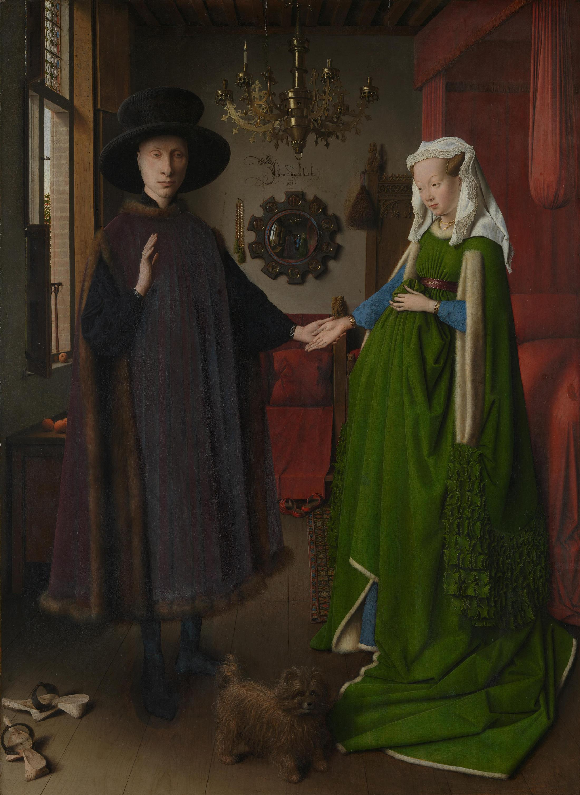
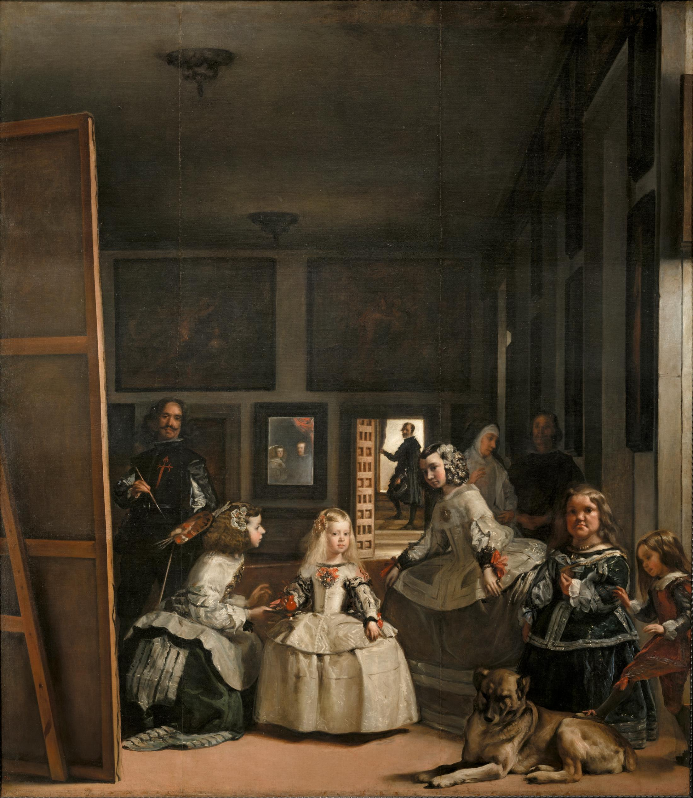
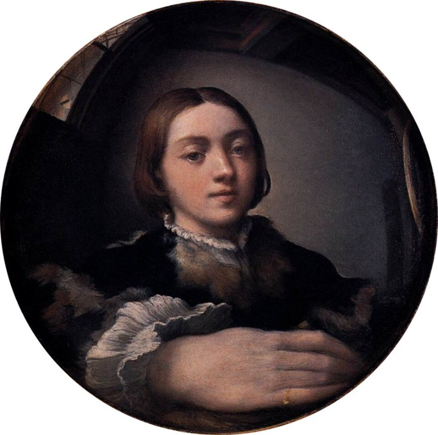
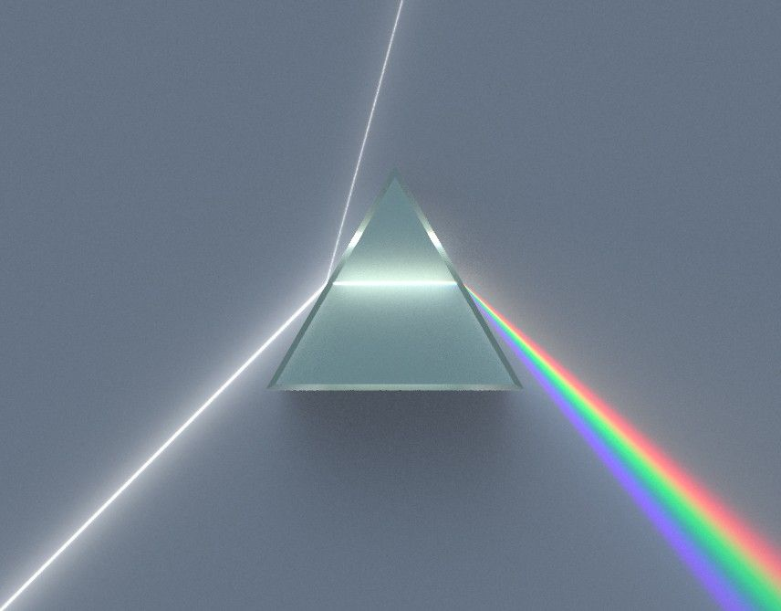
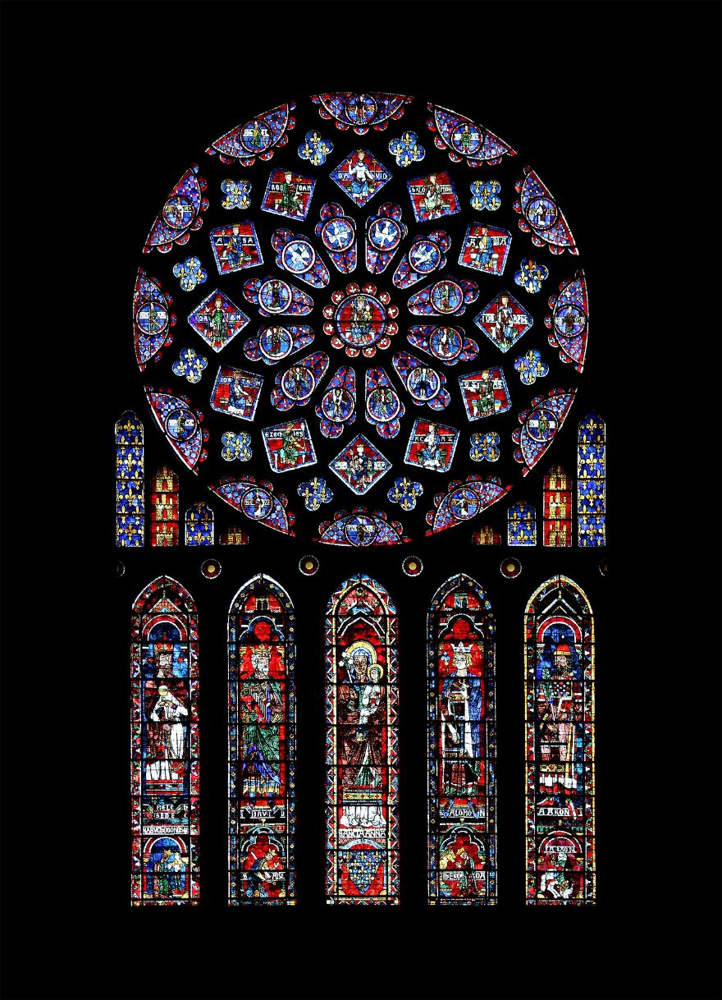
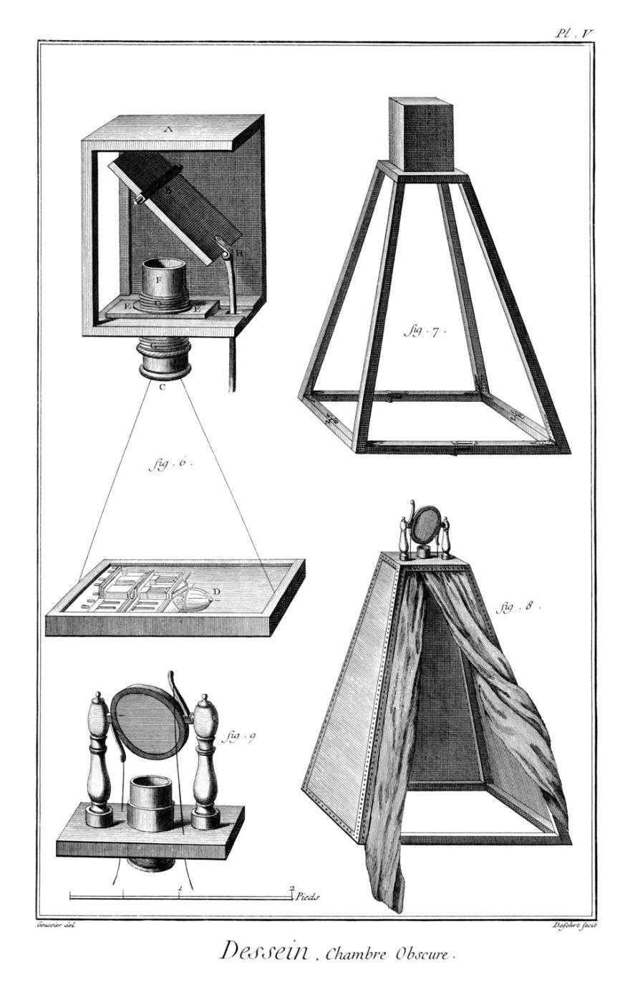
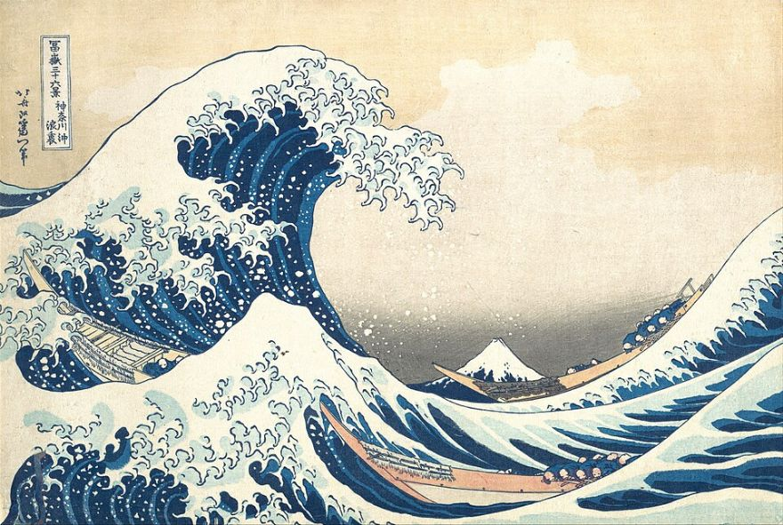

화가들은 거울 속 세상을 그림 안으로 끌어들였고, 렌즈는 빛의 길을 꺾어 세상을 다르게 보여 준다. 반사와 굴절의 규칙을 시뮬레이션으로 확인하고, 렌즈 앞뒤에 가림막을 놓으면 상이 어떻게 변하는지 예측한 뒤 직접 시현한다.
θi=θr · 상은 거울 뒤 같은 거리, 같은 크기, 바로 선 허상(좌우만 뒤바뀜)
화가들은 이 규칙으로 그림 밖 세상을 그림 안에 넣었다 → 뒤 두 장에서 반 에이크와 벨라스케스의 거울을 돋보기로 찾아보자.

얀 반 에이크(1390경~1441)가 1434년에 그린 유화(오크 패널, 약 82×60 cm, 런던 내셔널 갤러리). 이탈리아 상인 부부로 알려진 두 사람의 방을 세밀하게 그렸다. 거울 위 벽에 “얀 반 에이크 여기 있었다, 1434”라는 서명이 있다. 샹들리에에는 초 한 자루만 켜져 있다. 부부의 정체와 그림의 목적은 학자마다 해석이 다르다.
살펴보기 거울을 찾아 확대하고, 그 속에 무엇이 있는지 세어 보자.
볼록거울 속에 방 전체가 작게 모여 있다: 부부의 뒷모습, 열린 문, 문 앞의 두 사람(한 명은 화가일 수 있다는 해석). 틀의 작은 그림들은 그리스도 수난 장면이다.

디에고 벨라스케스(1599~1660)가 1656년에 그린 유화(캔버스, 약 318×276 cm, 마드리드 프라도 미술관). 가운데 어린 마르가리타 공주와 시녀들, 난쟁이와 개, 왼쪽에는 큰 캔버스 앞에 선 화가 자신이 있다. 뒷벽에는 거울과 열린 문이 있다. 누가 누구를 그리고 있는지 알 수 없어, 서양 미술에서 가장 많이 해석된 그림 중 하나다.
먼저 찾아보기 그림을 눌러 돋보기로 뒷벽을 살펴본 뒤 정답을 눌러 보자.
뒷벽 검은 틀 안의 거울에 왕 부부(펠리페 4세와 왕비)가 비친다는 해석이 일반적이다. 그렇다면 왕 부부는 그림 밖, 우리가 서 있는 자리에 있다.
1a+1b=1f · f=R2 · m=-ba ( b<0 이면 허상 )

파르미자니노 〈볼록거울 속 자화상〉(약 1524) 반구형 나무판에 거울 속 모습을 그대로 그렸다. 가까운 손은 크게, 방은 휘어 보인다. 볼록거울의 0<m<1·넓은 시야가 곧 이 그림의 모양이다.
에셔 〈구슬 거울 속의 손〉(1935)도 같은 원리(저작권으로 그림은 싣지 않음)
쿠사마 〈무한 거울의 방〉: 거울 방 안에 조형을 두어 끝없는 공간을 만든다. 엘리아슨 〈날씨 프로젝트〉: 천장 전체 거울이 노란 반원 태양과 관람객을 한 번 더 비춘다.

프리즘 분산(뉴턴, 1666): 흰 빛은 여러 색의 합

샤르트르 장미창: 색은 굴절이 아니라 금속 산화물의 흡수
① 축에 평행 → F′를 지남 · ② 렌즈 중심 직진 · ③ F를 지남 → 축에 평행

카메라 옵스쿠라(18세기 도해) 구멍·렌즈가 풍경을 거꾸로 맺는다. 화가들이 썼다는 가설(호크니–팔코, 2001)은 아직 논쟁 중이다.
한 점에서 나온 빛은 렌즈 전체를 지나 상의 한 점에 모인다 → 다음 장의 열쇠

물체: 호쿠사이 〈가나가와 해변의 높은 파도 아래〉(19세기) — 렌즈로 스크린에 맺는다고 생각해 보자
상황 볼록렌즈(f=100)로 그림을 스크린에 선명하게 맺었다. 이제 불투명한 종이로 렌즈를 일부 가린다.
Q1. 렌즈의 위쪽 절반을 종이로 가리면 스크린의 상은?
① 상의 위쪽 절반이 사라진다 ② 상의 아래쪽 절반이 사라진다 ③ 상 전체가 그대로, 어두워진다 ④ 상이 흐려진다 ⑤ 상이 뒤집어진다
Q2. 같은 크기의 종이를 아래 위치에 두면 Q1과 결과가 같을까?
| 가림막 위치 | 내 예측 |
|---|---|
| ① 물체 바로 앞(그림 쪽) | |
| ② 렌즈 바로 앞 | |
| ③ 렌즈 바로 뒤 | |
| ④ 스크린(상) 바로 앞 |
힌트: 8장에서 본 것처럼, 그림의 한 점에서 나온 빛은 렌즈의 어디를 지나 어디로 모일까?
볼록렌즈(돋보기 f≈10~20 cm) · 스마트폰(화면에 그림 띄우기) · 흰 종이 스크린 · 자 · 검은 종이(반원, 길쭉한 막대, 동전 크기 원판) · 어두운 교실
① 먼 창밖 풍경을 스크린에 맺어 f 재기 (스크린 거리 ≈ f)
② 스마트폰 그림을 렌즈 앞 a≈2f에 두고 스크린을 움직여 선명한 상 찾기
③ 검은 종이로 렌즈 위쪽 절반 가리기 → 상은?
④ 같은 종이를 렌즈 바로 뒤 → 스크린 바로 앞으로 천천히 옮기기
⑤ 가운데 원판을 렌즈에 붙인 뒤 스크린을 앞뒤로 움직이기
⑥ 스마트폰 쪽 가림(물체 바로 앞)도 해 보기
| 가림막 위치 | 예측 | 실제 관찰 |
|---|---|---|
| 렌즈 바로 앞 | ||
| 렌즈 바로 뒤 | ||
| 스크린 바로 앞 | ||
| 가운데 원판 | ||
| 물체 바로 앞 |
관찰할 것: ① 상이 잘리는가 ② 밝기 ③ 선명도 ④ 상의 가장자리
안전 렌즈로 햇빛을 모으면 종이가 타거나 눈을 다칠 수 있다. 실험은 스마트폰·LED 빛으로만 한다.
가림막: · 상 거리 b = · 렌즈 f = 100
옆에서 본 그림은 위·아래 가림만 보여 준다. 왼쪽·오른쪽은 아래 스크린 그림으로 확인.
| 가림막 위치 | 스크린의 상 |
|---|---|
| 렌즈 바로 앞·뒤 | 상 전체가 그대로, 가린 만큼 어두워진다 (절반 가림 → 빛 50 %) |
| 스크린(상) 바로 앞 | 상의 그 부분이 사라진다 (렌즈는 그대로 다 쓰는데 상점 자체가 가려짐) |
| 그 사이 | 가장자리부터 서서히 어두워지는 모습(비네팅) → 위치에 따라 연속으로 바뀐다 |
| 물체 바로 앞 | 가린 그림 부분이 상에서 사라진다 |
| 스크린을 앞뒤로 | 상이 흐려진다(착란원). 가림 모양이 흐림의 모양을 바꾼다 |
• 물체의 한 점 P에서 나온 빛은 렌즈 전체를 지나 상점 P′ 한 곳에 모인다.
• 렌즈 면에서는 그 빛다발이 렌즈만큼 넓다 → 일부를 가려도 나머지가 P′에 모인다(밝기만 감소).
• 상점 근처에서는 빛다발이 한 점으로 좁아지고, 물체의 점마다 서로 다른 곳에 모여 있다 → 가림막이 상의 일부를 통째로 막는다.
사진기 조리개 렌즈 지름을 줄여 밝기를 조절하지만 상은 그대로(심도는 깊어짐). 센서 가장자리는 상을 자른다(시야 조리개). 반사망원경 가운데 가림(보조 거울)은 상은 그대로이고 흐린 점이 도넛 모양(보케)이 된다.
핵심 렌즈 가림막은 상의 어디를 보이게 하느냐가 아니라 얼마나 많은 빛을 모으느냐를 바꾼다 — 단, 빛이 한 점에 모인 자리(상, 물체)에서만 위치 정보를 가린다.
n1sinθ1=n2sinθ2를 두 면에서 모두 적용 · 굴절률 n(λ)가 색마다 다르다 → 분산
뉴턴의 실험 어두운 방 창 덧문의 작은 구멍으로 햇빛을 프리즘에 보내 먼 벽(스크린)에 길쭉한 색 띠를 얻었다. 한 가지 색만 골라 두 번째 프리즘에 통과시켜도 색은 더 갈라지지 않았다 → 색은 프리즘이 만든 것이 아니라 흰 빛 속에 이미 있다.
입사각 = 반사각. 평면거울은 같은 거리의 바로 선 허상. 오목은 모으고 볼록은 퍼뜨린다.
n1sinθ1=n2sinθ2. 렌즈는 굴절로 한 점에서 나온 빛을 한 점에 모은다. 가림막은 빛의 양을 줄일 뿐, 상점에서는 위치도 가린다.
거울은 그림 밖을 안으로, 볼록거울은 시야를 넓혀 휘게, 렌즈는 세상을 뒤집어 맺는다. 프리즘은 흰 빛 속의 색을 드러낸다.
다음 차시 예고 입체 영상 · 착시 · 홀로그램 · 포토리소그래피 · 헤드 마운트 디스플레이 · 현미경과 망원경의 작동 원리
① 〈시녀들〉 거울 속 왕 부부는 그림 밖 어디에 서 있나? 그렇다면 그림을 보는 우리는 누구의 자리인가?
② 파르미자니노는 왜 볼록한 판 위에 자화상을 그렸을까?
③ 무한 거울 방에서 “나”는 몇 명일까? 허상도 나일까?
A. 작품 한 점에서 빛이 지나는 길을 광선 도해로 그리고 법칙을 써 설명한다.
B. 휴대폰 사진기 렌즈 일부를 가리고 찍어 가림 위치별 결과를 사진·문장으로 정리한다.
C. 〈거울·렌즈·시점〉 8~10줄 글 (물리 개념 2개 이상).
| 사용 장 | 파일 이름 | 작가 | 라이선스 |
|---|---|---|---|
| ③ | Van Eyck - Arnolfini Portrait.jpg | Jan van Eyck | Public domain |
| ④ | Las Meninas 01.jpg | Diego Velázquez | Public domain |
| ⑤ | Parmigianino - Self-portrait in a Convex Mirror | Parmigianino | Public domain |
| ⑦⑬ | Dispersive Prism Illustration.jpg | Dispersive_Prism_Illustration_ | CC BY-SA 3.0 |
| ⑦ | Chartres - cathédrale - rosace nord.jpg | Eusebius | Public domain |
| ⑧ | Camera obscura.png | Denis Diderot / Jean Le Rond d | Public domain |
| ⑨⑪ | Tsunami by hokusai 19th century.jpg | Katsushika Hokusai | Public domain |
| ⑪ | Van Gogh - Starry Night - Google Art Project.jpg | Vincent van Gogh | Public domain |
| ⑪ | Mona Lisa, by Leonardo da Vinci, from C2RMF natu | Leonardo da Vinci | Public domain |
사용 장은 슬라이드 번호(①~⑭)다. 일부는 크기를 줄였고 ③·④장은 돋보기용 큰 그림이며, ⑪장 계산 그림은 같은 그림을 64×42 화소로 줄인 것이다. 에셔·쿠사마·엘리아슨의 작품은 저작권 때문에 그림을 싣지 않고 설명만 했다. 시뮬레이션과 도식은 직접 제작.